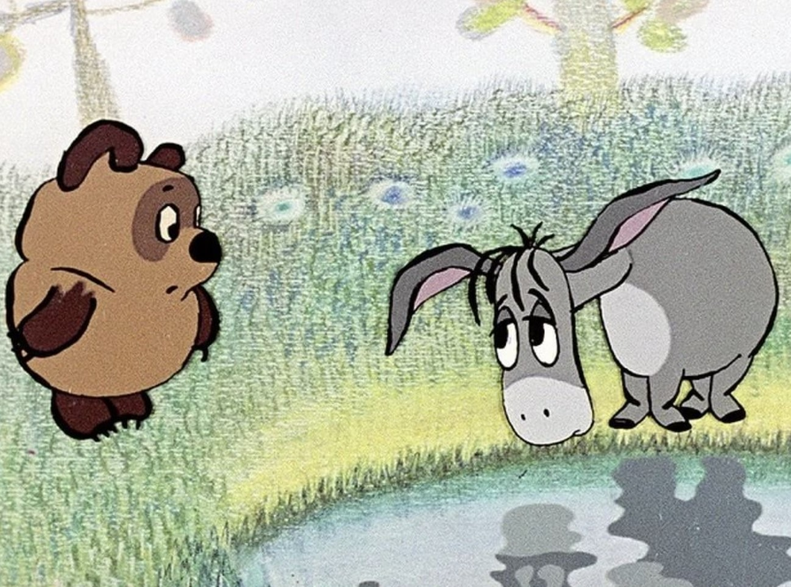

Винни-Пух и все-все-все. Глава шестая, в которой у Иа-Иа был День Рождения, а Пятачок чуть-чуть не улетел на Луну.
Алан Милн
Иа-Иа - старый серый ослик - однажды стоял на берегу ручья и понуро смотрел в воду на свое отражение.
- Душераздирающее зрелище, - сказал он наконец. - Вот как это называется - душераздирающее зрелище.
Он повернулся и медленно побрел вдоль берега вниз по течению. Пройдя метров двадцать, он перешел ручей вброд и так же медленно побрел обратно по другому берегу. Напротив того места, где он стоял сначала, Иа остановился и снова посмотрел в воду.
- Я так и думал, - вздохнул он. - С этой стороны ничуть не лучше. Но всем наплевать. Никому нет дела. Душераздирающее зрелище - вот как это называется!
Тут сзади него в ольшанике раздался треск, и появился Винни-Пух.
- Доброе утро, Иа! - сказал Пух.
- Доброе утро, медвежонок Пух, - уныло ответил Иа. - Если это утро доброе. В чем я лично сомневаюсь.
- Почему? Что случилось?
- Ничего, медвежонок Пух, ничего особенного. Все же не могут. А некоторым и не приходится. Тут ничего не попишешь.
- Чего все не могут? - переспросил Пух, потерев нос.
- Веселиться. Петь, плясать и так далее. Под ореховым кустом.
- А-а, понятно... - сказал Пух. Он глубоко задумался, а потом спросил: - Под каким ореховым кустом?
- Под которым орешки каленые, - уныло продолжал Иа-Иа. - Хоровод, веселье и тому подобное. Я не жалуюсь, но так оно и есть.
Пух уселся на большой камень и попытался что-нибудь понять. Получилось что-то вроде загадки, а Пух был слабоват по части загадок, поскольку в голове у него были опилки. И он на всякий случай запел загадочную песенку:
ПРО СОРОК ПЯТОК
- Вопрос мой прост и краток, -
Промолвил Носорог, -
Что лучше - сорок пяток
Или пяток сорок? -
Увы, никто на это
Ответа
Дать не мог!
- Вот-вот, правильно, - сказал Иа-Иа. - Пой, пой. Трум-тум-тум-тирим-бум-бум. В лесу родилась палочка, в лесу она росла. И много-много радости детишкам принесла. Веселись и развлекайся.
- Я веселюсь, - сказал Пух.
- Кое-кому удается, - сказал Иа-Иа.
- Да что такое случилось? - спросил Пух.
- А разве что-нибудь случилось?
- Нет, но у тебя такой грустный вид.
- Грустный? Отчего это мне быть грустным? Сегодня же мой день рождения. Самый лучший день в году!
- Твой день рождения? - спросил Пух, ужасно удивленный.
- Конечно. Разве ты не замечаешь? Посмотри на все эти подарки. - Иа-Иа помахал передней ногой из стороны в сторону. - Посмотри на именинный пирог!
Пух посмотрел - сначала направо, потом налево.
- Подарки? - сказал он. - Именинный пирог? Где?
- Разве ты их не видишь?
- Нет, - сказал Пух.
- Я тоже, - сказал Иа-Иа. - Это шутка, - объяснил он. - Ха-ха.
Пух почесал в затылке, совсем сбитый с толку.
- А сегодня правда твой день рождения? - спросил он.
- Правда.
- Ох! Ну, поздравляю тебя и желаю много-много счастья в этот день.
- И я тебя поздравляю и желаю много-много счастья в этот день, медвежонок Пух.
- Но ведь сегодня не мой день рождения.
- Нет, не твой, а мой.
- А ты говоришь "желаю тебе счастья в этот день".
- Ну и что же? Разве ты хочешь быть несчастным в мой день рождения?
- А, понятно, - сказал Пух.
- Хватит и того, - сказал Иа-Иа, чуть не плача, - хватит и того, что я сам такой несчастный - без подарков и без именинного пирога, и вообще позабытый и позаброшенный, а уж если все остальные будут несчастны...
Этого Винни-Пух уже не вынес.
- Постой тут! - крикнул он и со всех ног помчался домой. Он почувствовал, что должен немедленно преподнести бедному ослику хоть что-нибудь, а потом у него всегда будет время подумать о Настоящем Подарке.
Возле своего дома он наткнулся на Пятачка, который прыгал у двери, стараясь достать кнопку звонка.
- Здравствуй, Пятачок, - сказал Винни-Пух.
- Здравствуй, Винни, - сказал Пятачок.
- Что это ты делаешь?
- Я стараюсь позвонить, - объяснил Пятачок. - Я тут шел мимо и...
- Давай я тебе помогу, - сказал Пух услужливо. Он подошел к двери и нажал кнопку. - А я только что видел Иа, - начал он. - Бедный ослик ужасно расстроен, потому что у него сегодня день рождения, а все о нем забыли, и он очень понурился - ты ведь знаешь, как он умеет, - ну и вот он такой понурый, а я... Да что же это нам никто не открывает - заснули они все там, что ли? - И Пух снова позвонил.
- Пух, - сказал Пятачок. - Это же твой собственный дом!
- А-а, - сказал Пух. - Ну да, верно! Тогда давай войдем!
И они вошли в дом.
Пух первым делом подошел к буфету, чтобы удостовериться, есть ли у него подходящий, не особенно большой горшочек с медом. Горшочек оказался на месте, и Пух снял его с полки.
- Я его отнесу Иа, - объяснил он. - В подарок. А ты что ему думаешь подарить?
- А можно, я тоже его подарю? - спросил Пятачок. - Как будто от нас обоих.
- Нет, - сказал Пух. - Это ты плохо придумал.
- Ну, тогда ладно. Я подарю Иа воздушный шарик. У меня остался один от праздника. Я сейчас за ним схожу, хорошо?
- Вот это ты очень хорошо придумал, Пятачок! Ведь Иа нужно развеселить. А с воздушным шариком кто хочешь развеселится! Никто не может грустить, когда у него есть воздушный шарик!
Ну, и Пятачок пустился рысцой домой, а Пух с горшочком меду направился к ручью.
День был жаркий, а путь неблизкий, и, не пройдя и полпути, Пух вдруг почувствовал какое-то странное щекотание. Сначала у него защекотало в носу, потом в горле, а потом засосало под ложечкой и так постепенно дошло до самых пяток. Казалось, словно кто-то внутри у него говорил: "Знаешь, Пух, сейчас самое время чем-нибудь немножко..."
- Ай-ай, - сказал Пух, - я и не знал, что уже так поздно!
Он сел на землю и снял крышку со своего горшка.
- Как хорошо, что я взял его с собой, - сказал он. - Немало медведей в такой жаркий день и не подумали бы захватить с собой то, чем можно немножко подкрепиться!
- А теперь подумаем, - сказал он, в последний раз облизав донышко горшка, - подумаем, куда же это я собирался идти. Ах да, к Иа.
Винни-Пух не спеша встал. И тут он вдруг все вспомнил. Он же съел Подарок!
- Ай-ай-ай! - сказал Пух. - Что мне делать? Я же должен подарить ему что-нибудь! Ай-ай-ай-ай-ай!
Сперва он прямо не знал, что и думать. А потом он подумал:
"Все-таки это очень хорошенький горшочек, хотя в нем и нет меду. Если я его как следует вымою и попрошу кого-нибудь написать на нем: "Поздравляю с днем рождения", Иа сможет держать в нем все, что хочешь. Это будет полезная вещь!"
И так как он в это время был недалеко от Дома Совы - а все в Лесу были уверены, что Сова прекрасно умеет писать, - он решил зайти к ней в гости.
- Доброе утро, Сова! - сказал Пух.
- Доброе утро, Пух! - ответила Сова.
- Поздравляю тебя с днем рождения Иа-Иа, - сказал Пух.
- Вот как? - удивилась Сова.
- Да. А что ты ему думаешь подарить?
- А ты что думаешь ему подарить?
- Я несу ему в подарок Полезный Горшок, в котором можно держать все, что хочешь, - сказал Пух. - И я хотел попросить тебя...
- Вот этот? - спросила Сова, взяв горшок из лапок Пуха.
- Да, и я хотел попросить тебя...
- Тут когда-то держали мед, - сказала Сова.
- В нем можно что хочешь держать, - серьезно сказал Пух. - Это очень, очень полезная вещь. И я хотел попросить тебя...
- Ты бы написал на нем: "Поздравляю с днем рождения".
- Так вот об этом я и пришел тебя попросить! - объяснил наконец Пух. - Потому что у меня правильнописание какое-то хромое. Вообще-то оно хорошее правильнописание, но только почему-то хромает и буквы опаздывают... на свои места. Ты напишешь на нем: "Поздравляю с днем рождения"? Очень тебя прошу!
- Славный горшочек, - сказала Сова, оглядев горшок со всех сторон. - А можно, я его тоже подарю? Пусть это будет наш общий подарок.
- Нет, - сказал Пух. - Это ты плоховато придумала. Давай я лучше его сперва помою, а потом ты на нем все напишешь.
И вот он вымыл горшок и вытер его досуха, а Сова тем временем мусолила кончик своего карандаша и думала, как же пишется слово "Поздравляю".
- Пух, а ты умеешь читать? - спросила она не без тревоги в голосе. - Вот, например, у меня на двери висит объявление, как звонить, - это мне Кристофер Робин написал. Ты можешь его прочесть?
- Кристофер Робин сказал мне, что там написано, и тогда я уж смог, - ответил Пух.
- Очень хорошо! Вот и я тоже скажу тебе, что тут на горшке будет написано, и тогда ты сможешь прочитать!
И Сова начала писать... Вот что она написала:
"Про зря вля вля сдине мраш деня про зря вля вля вля!"
Пух с восхищением посмотрел на эту надпись.
- Я тут написала: "Поздравляю с днем рождения", - небрежно заметила Сова.
- Вот это надпись так надпись! - с уважением сказал Винни-Пух.
- Ну, если уж все тебе сказать, тут написано полностью так: "Поздравляю с днем рождения, желаю всего-всего хорошего. Твой Пух". Я не посчиталась с расходом графита.
- Чего? - спросил Пух.
- Тут одного карандаша сколько пошло! - пояснила Сова.
- Еще бы! - сказал Пух.
Тем временем Пятачок успел сбегать к себе домой и, захватив воздушный шарик для Иа-Иа, понесся во весь дух, крепко прижимая воздушный шар к груди, чтобы его не унесло ветром. Пятачок ужасно спешил, чтобы поспеть к Иа-Иа раньше Пуха; ему хотелось первым преподнести Ослику подарок, как будто он, Пятачок, сам вспомнил про его день рождения, без всякой подсказки. Он так спешил и так задумался о том, как Иа-Иа обрадуется подарку, что совсем не глядел себе под ноги... И вдруг его нога попала в мышиную норку, и бедный Пятачок полетел носом вниз: БУМ!!!
Пятачок лежал на земле, не понимая, что же произошло. Сперва он подумал, что весь мир взлетел на воздух, потом он подумал, что, может быть, только их любимый Лес; еще потом - что, может быть, только он, Пятачок, взлетел и сейчас он один-одинешенек лежит где-нибудь на Луне и никогда-никогда не увидит больше ни Пуха, ни Кристофера Робина, ни Иа... И тут ему пришло в голову, что даже и на Луне не обязательно все время лежать носом вниз. Он осторожно встал, осмотрелся кругом.
Он все еще был в Лесу!
"Очень интересно! - подумал он. - Интересно, что же это был за Бум? Не мог же я сам наделать столько шуму, когда упал! И где, интересно, мой шар? И откуда, интересно, взялась тут эта тряпочка?"
О, ужас! Эта тряпочка - это и был, именно был! - его воздушный шар!!
- Ой, мама! - сказал Пятачок. - Ой, мама, ой, мамочка, ой, мама, мама, мама! Ну что ж... Теперь делать нечего. Возвращаться назад нельзя. Другого шара у меня нет... Может быть, Иа-Иа не так уж любит воздушные шары?...
И он побежал дальше. По правде сказать, бежал он уже не очень весело, но все же скоро он добежал до того самого места, где стоял Иа-Иа и по-прежнему смотрел на свое отражение в воде.
- Доброе утро, Иа! - крикнул Пятачок еще издали.
- Доброе утро, маленький Пятачок, - сказал Иа-Иа. - Если это утро - доброе, - добавил он, - в чем я лично сомневаюсь. Но это неважно.
- Поздравляю тебя с днем рождения, - сказал Пятачок, подойдя тем временем поближе.
Иа оторвался от своего занятия и уставился на Пятачка.
- Повтори-ка, повтори, - сказал он.
- Поздрав...
- Минуточку...
С трудом держась на трех ногах, Иа стал осторожно поднимать четвертую ногу к уху.
- Я вчера этому научился, - пояснил он, упав в третий раз. - Это очень просто, а главное, я так лучше слышу. Ну вот, все в порядке. Так как ты сказал, повтори, - произнес он, с помощью копыта наставив ухо вперед.
- Поздравляю с днем рождения, - повторил Пятачок.
- Это ты меня?
- Конечно, Иа-Иа.
- С моим днем рождения?
- Да.
- Значит, у меня настоящий день рождения?
- Конечно, Иа, и я принес тебе подарок.
Иа-Иа медленно опустил правую ногу и с немалым трудом поднял левую.
- Я хочу послушать еще другим ухом, - пояснил он. - Теперь говори.
- По-да-рок! - повторил Пятачок очень громко.
- Мне?
- Да.
- К дню рождения?
- Конечно!
- Значит, у меня получается настоящий день рождения?
- Конечно! И я принес тебе воздушный шар.
- Воздушный шар? - сказал Иа-Иа. - Ты сказал - воздушный шар? Это такие большие, красивые, яркие, их еще надувают? Песни-пляски, гоп-гоп-гоп и тру-ля-ля?
- Ну да, но только... понимаешь... я очень огорчен... понимаешь... когда я бежал, чтобы поскорее принести тебе его, я упал.
- Ай-ай, как жаль! Ты, наверно, слишком быстро бежал. Я надеюсь, ты не ушибся, маленький Пятачок?
- Нет, спасибо, но он... он... Ох, Иа, он лопнул.
Наступило очень долгое молчание.
- Мой шарик? - наконец спросил Иа-Иа.
Пятачок кивнул.
- Мой деньрожденный подарок?
- Да, Иа, - сказал Пятачок, слегка хлюпая носом. - Вот он. Поздравляю тебя с днем рождения.
И он подал Иа-Иа резиновую тряпочку.
- Это он? - спросил Иа, очень удивленный.
Пятачок кивнул.
- Мой подарок?
Пятачок снова кивнул.
- Шарик?
- Да.
- Спасибо, Пятачок, - сказал Иа - Извини, пожалуйста, - продолжал он, - но я хотел бы спросить, какого цвета он был, когда... когда он был шариком?
- Красного.
"Подумать только! Красного... Мой любимый цвет", - пробормотал Иа-Иа про себя.
- А какого размера?
- Почти с меня.
- Да? Подумать только, почти с тебя! Мой любимый размер! - грустно сказал Иа-Иа себе под нос. - Так, так.
Пятачок чувствовал себя очень неважно и прямо не знал, что говорить. Он то и дело открывал рот, собираясь что-нибудь сказать, но тут же решал, что именно этого говорить-то и не стоит. И вдруг, на его счастье, с того берега ручья их кто-то окликнул. То был Пух.
- Желаю много-много счастья! - кричал Пух, очевидно забыв, что он уже это говорил.
- Спасибо, Пух, мне уже посчастливилось, - уныло ответил Иа-Иа.
- Я принес тебе подарочек, - продолжал Пух радостно.
- Есть у меня подарочек, - отвечал Иа-Иа.
Тем временем Пух перебрался через ручей и подошел к Иа-Иа. Пятачок сидел немного поодаль, хлюпая носом.
- Вот он, - объявил Пух. - Это - Очень Полезный Горшок. А на нем знаешь чего написано? "Поздравляю с днем рождения, желаю всего-всего хорошего. Твой Пух". Вот сколько всего написано! И в него можно класть что хочешь. Держи.
Иа-Иа, увидев горшок, очень оживился.
- Вот это да! - закричал он. - Знаете что? Мой шарик как раз войдет в этот горшок!
- Что ты, что ты, Иа, - сказал Пух. - Воздушные шары не входят в горшки. Они слишком большие. Ты с ними не умеешь обращаться. Нужно вот как: возьми шарик за вере...
- Это другие шары не входят, а мой входит, - с гордостью сказал Иа-Иа. - Гляди, Пятачок!
Пятачок грустно оглянулся, а Иа-Иа схватил свой бывший шарик зубами и осторожно положил его в горшок, потом он достал его и положил на землю, а потом снова поднял и осторожно положил обратно.
- Выходит! - закричал Пух. - Я хочу сказать, он входит!
- Входит! - закричал Пятачок. - И выходит!
- Здорово выходит! - закричал Иа-Иа. - Входит и выходит - прямо замечательно!
- Мне очень приятно, - радостно сказал Пух, - что я догадался подарить тебе Полезный Горшок, куда можно класть какие хочешь вещи!
- А мне очень приятно, - радостно сказал Пятачок, - что я догадался подарить тебе такую Вещь, которую можно класть в этот Полезный Горшок!
Но Иа-Иа ничего не слышал. Ему было не до того: он то клал свой шар в горшок, то вынимал его обратно, и видно было, что он совершенно счастлив!